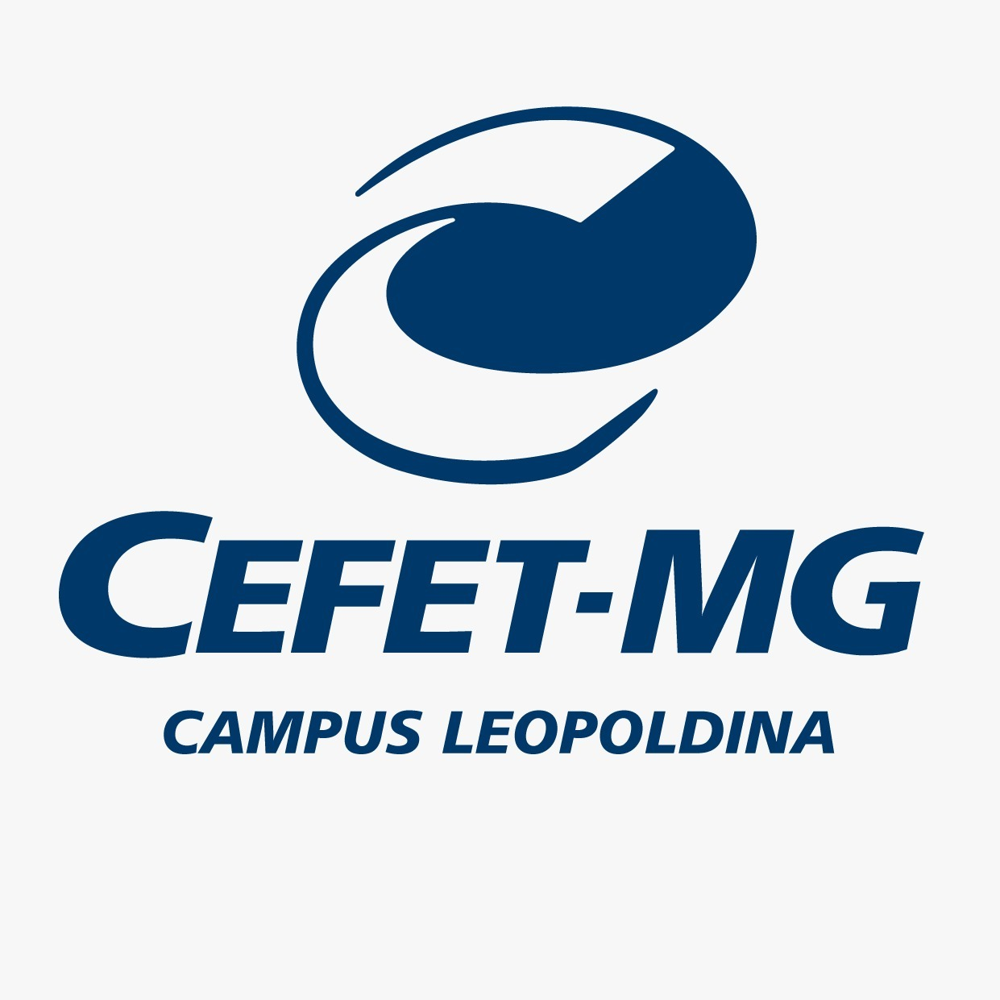
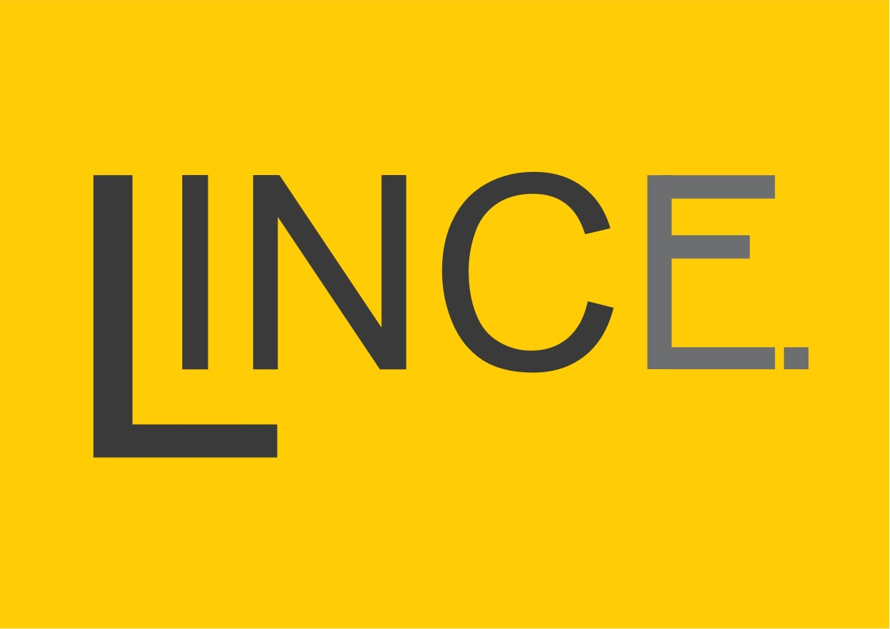

Onde e quando o evento irá ocorrer?
O evento será no Campus de Leopoldina do Centro Federal de Educação Tecnológica de Minas Gerais!
Acontecerá na última semana no mês de Agosto de 2024, entre os dias 26 e 30.
O que terá no evento?
A Semana da Computação 2024 está repleta de atividades:
- Visitas Técnicas
- Minicursos
- Palestras
Veja aqui a lista completa
Quem são os organizadores?
Este evento é um oferecimento conjunto do CEFET-MG, LINCE e PET.COMP



Como participar?
Para participar basta se registrar na plataforma ENV3 e escolher as atividades desejadas!